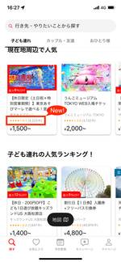
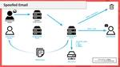

asoview! Tech Blog
https://tech.asoview.co.jp/
asoview! Tech Blog
フィード
イベント「スマート育児の時代」登壇レポート 2
2
asoview! Tech Blog
はじめに 自己紹介 こんにちは！アソビュー開発チームでチームリーダーをしている山本です。 4歳と2歳の男の子がおり、週末は家族でお出かけするのを楽しみに仕事を頑張っています！ 最近はSport & Do Resort リソルの森 フォレストアドベンチャー・ターザニアに行き、4歳長男がキッズコースに挑戦しました。最初は緊張していましたが、慣れるとどんどん足取りも軽くなり結局は5周もしていたのをみて成長を感じました！ 大人は400m以上あるロングジップスライドコースを体験し、爽快で気持ちよかったです！ 登壇するきっかけ 現在アソビューでは技術広報にも力を入れています。（ご興味ある方は弊社技術広報の…
1日前
プロジェクトマネージャーからプロダクトオーナーへの転身。スクラムの実践を通じて学んだ課題と魅力 5
asoview! Tech Blog
はじめに ローンチまでのプロジェクト管理 開発プロセス プロジェクトの運用課題 開発スコープの肥大化 変更にかかるコストが大きい 実際には多くの不確実性を内包していた プロジェクトマネジメント 1 → 10フェーズへの移行とスクラムの導入 スクラム 実感した成果 課題感 メンバーの意識の高さに依存する チーム運用が軌道に乗るまである程度時間が必要 プロダクトマネジメント プロダクトオーナー プロダクトオーナーになる プロダクトオーナーとは プロダクトオーナーの魅力 プロダクトマネージャーとの違い プロジェクトマネージャーとの違い プロダクトオーナーの仕事 要求分析・要件定義 プロダクトバックロ…
4日前

SwiftUIで5段階評価を星マークで表示する 1
asoview! Tech Blog
はじめに 動作環境 要件 実装 さいごに はじめに アソビューで最近iOSアプリ開発をしている上中です。 アソビューは現在Swiftで開発したiOSアプリをAppStoreで公開していますが、最近TOPページや検索結果表示の際に各種プランに口コミの評価点を表示する機能を追加しました。 今回はその時にSwiftUIで作った5段階評価を星マークで表現するコンポーネントを皆さんの参考になればと思い共有します。 動作環境 執筆時点の動作環境を参考までに記載しておきます。 ・Xcode Version 15.2 ・Swift 5 要件 以下のような評価の星を表示するコンポーネントを作成します。 こちらは…
4日前
障害調査のプロセスと心構え。よりスムーズに調査を進め、障害を解決するために必要なこと 2
asoview! Tech Blog
こんにちは、エンジニアの森です。 自己紹介 担当業務 現在はasoviewのバックエンド/フロントエンドのどちらも携わっています。 経歴 2013年新卒で派遣会社に入社、7年間派遣業務（業務系/組み込み系開発）に従事 7年目に退職を考え、会社と話し合った結果、社内で請負部門を立ち上げ 3年間受託開発（Web系/Androidアプリ開発）に従事し、2023年2月にアソビューに転職 はじめに 本番障害はエンジニアにとって避けたいものですが、現実には発生することもあります。 しかし、障害の発生を恐れる必要はなく、適切な対応手順を知っていれば、迅速に解決し、貴重な経験を積むことができます。 今回は、私…
5日前
プロダクトマネージャーの振り返りチェックリスト 1
asoview! Tech Blog
はじめに アソビュー株式会社の野上です。 1年半前にアソビューにジョインし、プロダクトマネージャーを担当しています。 今回は私が定期的に行っている振り返りのチェックリストを公開しようと思います。 背景 アソビューに入社して始めてプロダクトマネージャーを担当していること、過去ブログでも記載したのですが、30名弱の開発チームのマネジメントとステークホルダーが80名程の方とお仕事させてもらっているためプロダクトマネージャーとして自身が課題に向き合い改善しながら前進できているかをしっかり振り返りを行いたくセルフで振り返りリストを作成し定期的にチェックをしています。 ちなみにチェックリストについては、前…
5日前

Googleの新ガイドライン対応だけで終わらせない：5分で構築する自前のレポート分析ツールでDMARCを正しく運用 5
asoview! Tech Blog
アソビュー株式会社VPoEの @tkyshat です。 はじめに この記事は、以下の方々を対象にしています： メールのセキュリティについてかいつまんで知りたい方 DMARCをまだ設定できていない方 DMARCの設定はしたもののポリシーがnoneのままの方 DMARCの設定はしているがレポートをうまく活用できていない方 すでにDMARCの設定が完了し、レポートのモニタリングもできており、BIMI認証まで完了している方には物足りないかもしれません。 ブログの中で簡易的なものではありますが、5分でできるレポート分析ツールの構築方法も紹介しておりますので、ぜひ参考にしていただければと思います。 背景と…
11日前

QA体制の過去〜現在〜未来
asoview! Tech Blog
アソビューのQAチームの紹介 過去〜現在のQA体制と、プロダクト成熟度の関係 現在のQA体制とQMファンネルの比較 インプロセスTEとスプリットTE これからのQA目標と方向性 インプロセスTE、QA目標 スプリットTE、QA目標 プロダクト成熟度や変化に応じた横断的なQA さいごに こんにちは。QAエンジニアの渡辺です。 1年半前にアソビューにジョインし、現在QAリーダーをさせていただいております。 過去のQAチームのブログを見ると様々な掲載があり、外から見て現在の体制が分かりにくいかと思いましたので、 一度、アソビューのQA体制の過去〜現在と、これからの方向性をまとめてみたいと思います。 …
19日前
ESLintを活用したReact Routerのアップデート作業
asoview! Tech Blog
こんにちは。技術本部ウラカタ開発部のkaorun343です。フロントエンドエンジニアのチームでは継続的に開発環境の改善活動をおこなっています。今回はこの活動において実施した、React Routerのアップデート作業について紹介します。 はじめに 方針 移行ガイドにそって更新作業を実施する ESLintを用いる AST Grepについて ESLintを活用した移行作業 ルート定義の修正 <Switch> の中にある <Redirect> を除去 <Switch> の中にある <Route> 以外のコンポーネントの除去 コンポーネントの修正 route propsを利用している箇所の修正 最後に…
1ヶ月前
Next.js App Router、Server Actions、Conform、Zodで条件分岐があるフォームを作る
asoview! Tech Blog
Next.js App Router、Server Actions、Conform、Zodで条件分岐があるフォームを作る。Googleフォームのようなイメージのカスタム質問項目のフォームの作成を検証しましたので紹介します。
1ヶ月前
デジタルツアーというアイスブレイクをチーム朝会で実施した話
asoview! Tech Blog
こんにちは！ アソビュー開発チームでチームリーダーをしている近藤です。 みなさん、5月といえばGWのイメージがあると思います。 我が家ではGWはどこも混雑するため、その次の週末に出かけようとなり、【セットでお得】江の島岩屋、新江ノ島水族館セットチケット｜アソビュー！に行ってきました！ 4歳の子供にとって初経験の洞窟、好きな魚を見ることが楽しかったようでなによりです。 今回は、チーム内で行なったアイスブレイクについてご紹介させていただきます。 アイスブレイクで何をしよう？と悩んでいる方の参考になると幸いです。 ~ 目次 ~ はじめに デジタルツアー 概要 目的 実施内容 まとめ さいごに はじめ…
1ヶ月前
チケット不正転売禁止法に向き合うために求められるシステム対応を知る
asoview! Tech Blog
政府広報オンライン（チケットの高額転売は禁止です！～チケット不正転売禁止法より） はじめに こんにちは、アソビュー大川です。春の行楽シーズン、ゴールデンウイークとお出かけ機会が多くなる季節を経て、もうすぐ夏がやってきますね。夏に向けて遊びや旅行を企画されている方も増えてきているんじゃないでしょうか。 今回はアソビュー！でお取り扱いさせていただいている多彩なジャンルのチケットについて、日々の業務とも徐々に関連してきているテーマについて考えてみます。音楽やスポーツのような一部のジャンルでは活発に議論がなされている「不正転売とその対策」に関して、私のこれまでの経験と勝手な私見も交えながら今後の弊社の…
1ヶ月前
Android Studioの機能入門 Layout Inspector編
asoview! Tech Blog
はじめに アソビュー！のAndroidアプリ開発を担当している田澤です。 Android村を飛び出し数年放浪してからこの度Android村に帰ってきました。 その間に、ViewからComposeへといった変革を筆頭に様々な動きがありました。それはIDEであるAndroid Studioでも変わらないのではないかと考えています。そこで久しぶりにAndroid Studioと向き合い、現状でどのような機能があるのか、もしくは見落としていた機能はあったのかを見直し生産性の向上に繋げたいと思います。今回はLayout Inspectorについて説明してきたいと思います。 余談ではありますがAndroi…
1ヶ月前
アプリ開発チームにおける顧客理解を深める活動について
asoview! Tech Blog
.entry-inner img{ border: 0.8px solid #a9a9a9; } .equal-width { width: 80%; table-layout: fixed; } こんにちは。アプリ開発チームのリーダーをやっている 五十嵐 です。 みなさん、4月といえばいつも何をされますか？やっぱり花見ですかね？ 我が家のこの時期恒例イベントは「名探偵コナン」の映画鑑賞です！聖地巡礼と称した旅をするのも恒例となってきており、去年は八丈島、その前は鳥取、そして先週末は函館へ行ってきました！まだ満開ではなかったですが、五稜郭の桜や函館山の夜景がとてもキレイでしたよ！ さて、今回は…
2ヶ月前
キャリアデザインを促進する、手段としての技術広報
asoview! Tech Blog
アソビュー株式会社VPoEの @tkyshat です。 はじめに キャリア不確実性が高まっており、多くの人がキャリアの悩みを抱えています。日々の生活の中でも、自分の考えを行動に移す一歩が踏み出せないことがあります。前回は、このような悩みを解放する方法として「ネガティブ・ケイパビリティ」と「計画的偶発性理論」を取り上げました。 tech.asoview.co.jp 今回は続編として、技術広報を活用することで、コントロール不能なキャリア状況にどう対峙するかを探ります。 キャリアデザインに関してはキャリアというゲームの構造原理について｜山口周に記してある 時間資本を用いて人的資本を生み出し、人的資本…
2ヶ月前
ドキュメントレスな社内システムをIntelliJ IDEAのプラグインを開発して調査を進めた話
asoview! Tech Blog
はじめに こんにちは。アソビューで主にバックエンド開発に携わっている東郷です。 今回は、社内システムの機能移行プロジェクトで直面したドキュメントレスの課題と、その解決策について共有します。 この記事が同じ問題に直面している開発者の助けとなれば幸いです。 既存システムの課題と新システムへの移行準備 既存の社内システムは、過去10年以上にわたって多くのビジネスプロセスを支えてきましたが、技術の進化と組織の成長に伴い、その限界が明らかになってきました。 効率性、拡張性、およびコスト効率の向上を実現するために、新しいシステムに機能を移し替えることを検討する段階にきました。 社内システムの概要 アソビュ…
2ヶ月前
アソビューを支える3つのSRE。それぞれの専門性を活かすための組織体制
asoview! Tech Blog
今回は、弊社のSRE(Site Reliability Engineering)と、その役割を果たすSREs(Site Reliability Engineers)について紹介させて頂きます！
3ヶ月前
サービス開始から12年、100名規模組織のCTOってなにやってるの？ in 2023
asoview! Tech Blog
こちらの記事は アソビュー！ Advent Calendar 2023 の25日目(A面)、最後の記事です。 こんにちは。アソビューCTOの江部です。めりくり〜〜 ついこないだ昨年分を書いた気がしますが、もうこの日がやってきてしまいました。 今年は何をお届けしようかと悩みましたが、今年1年の振り返りも含めて、自分が1年間どのように時間を投資してきたのかを書いてみることにしました。 ということで、アソビューCTOが2023年最も時間を使った分野TOP5を発表したいと思います！ ででん！ アソビューCTOの時間の使い方 in 2023 上記は私のGoogle Calendar から予定をエクスポー…
6ヶ月前
100人を超えたプロダクト組織で全員が活躍するための役割可視化の取り組み
asoview! Tech Blog
これはアソビュー！ Advent Calendar 2023の25日目です🎅 今年のアドベントカレンダーは2面公開なので、ぜひそちらも御覧ください！ アソビューでVPoE兼Tech Leadをしているdisc99🐼です！ 今年のアドベントカレンダーは1日に技術的取り組みを紹介させてもらったので、最後の今日は組織的な取り組みの紹介をできればと思います🎁 はじめに 起こる問題 コミュニケーションパスの問題 組織構造の問題 多様性 変化への適応 目的 Holaspirit 期待する効果 可視化による効果 アップデートプロセスによる効果 最後に はじめに 現在アソビューでは、プロダクト開発を行っている…
6ヶ月前
Embedded SREを1年間やってみた
asoview! Tech Blog
アソビュー！ Advent Calendar 2023の24日目(B面)です。 こんにちは！ アソビューでバックエンドエンジニアをしている頭島です。 今回は約1年間 Embedded SREで実施したこと､得られたことをご紹介します｡ アソビューにおけるEmbedded SRE 実施したこと Argo CDの導入 カナリアリリースの導入 ドキュメンテーションの推進 得られたこと 最後に アソビューにおけるEmbedded SRE 一般的には専任のSREメンバーがプロダクトチームに参加するケースが多いと思いますが、アソビューのEmbedded SREでは、プロダクトチームに在籍するメンバーがSR…
6ヶ月前
入社2ヶ月エンジニアから見るアソビュー！での働き方
asoview! Tech Blog
はじめに こちらは アソビュー！ Advent Calendar 2023の24日目(A面)の記事です。 こんにちは！ 小学2年生の時、夜中に両親がプレゼントを担いでいるところを見てからサンタクロースが来なくなった佐藤です。 私は元々、SES企業にてエンジニアをしていましたが、今年の11月からバックエンドエンジニアとしてアソビューにジョインしました。 ジョインして2ヶ月が経ち、日々驚きと戸惑いと、達成感を感じながら働いています。 本日はそんなジョインしたてのエンジニアから見る、アソビューでのエンジニアとしての働き方についてお話しさせていただきます。 勤務形態の柔軟性 フルリモート コロナ禍から…
6ヶ月前
アソビューデータ基盤チームの紹介
asoview! Tech Blog
こちらの記事は、アソビューAdvent Calendar 2023の23日目(A面)です。🎄本記事ではアソビューデータ基盤チームの紹介をできればと思います！
6ヶ月前
DynamoDB へのデータインポートって意外と大変！
asoview! Tech Blog
.entry-inner img{ border: 1px solid #000; } こちらの記事は アソビュー！ Advent Calendar 2023 の23日目(B面)です。 こんにちは。アソビューでバックエンドエンジニアをやっている 五十嵐 です。 やっと寒くなってきてクリスマス感も出てきましたね！（もう明後日ですが・・・！！） 我が家は家族みんなが体調を崩していましたが、みなさまも体調に気をつけて、楽しいクリスマス & お正月をお迎えください！ さて、今回は Amazon DynamoDB について触れてみたいと思います。 DynamoDB について Amazon DynamoD…
6ヶ月前
座席指定システムにおける購入導線のアクセシビリティ改善
asoview! Tech Blog
こちらの記事は、アソビューAdvent Calendar 2023の22日目(B面)です。 はじめに 座席指定システムとは 対応方針 1. 公演選択画面 2. エリア選択画面 3. 座席選択画面 4. 券種選択画面 5. 購入画面 まとめ We're hiring！ はじめに こんにちは！アソビュー株式会社でフロントエンドエンジニアをしている村井です。 先日、社内の輪読会でアクセシビリティについての本を読み、アクセシビリティとその重要性について学びました。それをきっかけとして、弊社でもアクセシビリティの改善をはじめています。 今回は開発中の座席指定システムにおける購入導線のアクセシビリティ改善…
6ヶ月前
半年遅れでChatGPTとGitHub Copilot使って開発してみた！
asoview! Tech Blog
これはアソビュー！ Advent Calendar 2023の22日目（A面）です🎄 今年のアドベントカレンダーは2面公開なので、ぜひそちらも御覧ください。 はじめに みなさん、こんにちはー。アソビューでバックエンドエンジニアをしている東郷です。 今年は生成AI元年と言われるだけあって、AIの活用事例のニュースをほぼ毎日耳にした気がします。 弊社内でもAI活用事例がいくつかあるので是非ご覧ください！ tech.asoview.co.jp tech.asoview.co.jp tech.asoview.co.jp tech.asoview.co.jp 今回のテーマ さて、時代はAIだ！と思いなが…
6ヶ月前
上流工程〜そしてスクラムへ！ スクラムにおける上流工程のあり方
asoview! Tech Blog
こんにちは！こちらの記事は、アソビューAdvent Calendar 2023の21日目(A面)です。 はじめに 要求分析 ユーザーストーリーマッピング ユースケース分析 要件定義 設計・開発 スクラム まとめ We're hiring！ はじめに アソビューでプロジェクトマネージャーをしている杉浦と申します。現在、この度弊社では興行領域にチャレンジすべく座席指定可能なSaas型のチケット販売システムの開発を行なっております！ 私自身興行領域のプロダクトに携わった経験がなく初めは何を作ればいいのかもわからない状態でした。しかし多くの方々の協力の元なんとかプロジェクトを立ち上げることができました…
6ヶ月前
キャリア不確実性から生じる漠然とした不安の克服：2つの理論に基づくアプローチ
asoview! Tech Blog
これは アソビュー！Advent Calendar 2023のB面 21日目です。 🎄 今年のアドベントカレンダーは2面公開なので、ぜひそちらも御覧ください。 エンジニアリングマネージャーの服部です。 昨今の生成AI登場に伴うエンジニア不要論によってキャリアクライシスに陥ったり、キャリアに対するどうしようもない不安に駆られてしまう人は少なくないのではないでしょうか。 この悩みや不安をネガティブ・ケイパビリティと計画的偶発性理論の観点から手放せるようになった話をします。 各理論について 計画的偶発性理論 計画的偶発性理論（Planned Happenstance Theory）は、心理学者のジョ…
6ヶ月前
Spring WebFlux × Spring Securityで動的にOAuth 2.0クライアント情報を取得する
asoview! Tech Blog
こちらの記事は、アソビュー！ Advent Calendar 2023の20日目(B面)です。 こんにちは！ アソビューでバックエンドエンジニアをしている島田です。 そろそろクリスマスが近づいていますが、4歳の息子に去年は3歳で3つのプレゼントがあったから今年は4つだよね？と末恐ろしいことを言われて恐々としています... (お菓子セットで逃げようかと思います) さて本題ですが、SaaS向けシステムの新規開発を行い、その中でSpring Cloud GatewayにSpring SecurityのOAuth 2.0クライアントを実装しました。 アソビューのバックエンドシステムは、さまざまなアプリ…
6ヶ月前
読みづらい書きづらいテストコードを改善する話
asoview! Tech Blog
アソビュー！ Advent Calendar 2023の19日目のブログです。 こんにちは！アソビューでバックエンドを担当している佐藤です。 テストコード書くの面倒ですが書かないと不安になりますね？！でもやっぱり書くのは面倒ですよね...。読みづらいテストコードだと修正するモチベーションもさがります。 困っていたこと 私の所属するプロジェクト（Java）ではSpockを使ってテストコードを書いています。 本来であればSpockを使うことでシンプルに記述できるはずなのですが、プロジェクトのルールとしてドメインにはLombokの@Valueアノテーションをつけることが必須となっています。つまりは@…
6ヶ月前
プルリクエストの単位を小さくし、コードレビューの負荷とマージまでの期間を大幅短縮した話
asoview! Tech Blog
これは アソビュー！Advent Calendar 2023のB面 19日目です。 🎄 今年のアドベントカレンダーは2面公開なので、ぜひそちらも御覧ください！ こんにちは、バックエンドエンジニアのアズマです。 今回は、プロダクトコードの品質に関わる話の1つで、プルリクエストの単位を小さくし、そのレビューにかかる負荷と、マージまでの期間を大幅に短縮した話をします。 弊社のタスクとコード管理 実際に起こった課題 例1 ちょっと多いかな？ 例2 ファイル数が爆発 例3 スマッシュ大作 ふりかえりと実施したこと 終わりに 弊社のタスクとコード管理 弊社では開発スプリントや修正タスクの管理はJiraで、…
6ヶ月前
データからユーザーの感情を読み取り、アプリに反映させた話。アソビュー！全面リニューアルの裏側
asoview! Tech Blog
データ活用、データ基盤構築の先にある顧客理解。顧客の感情にどうより沿ったかをアソビュー！での実際のプロダクト改善の例をもとにまとめました！
6ヶ月前